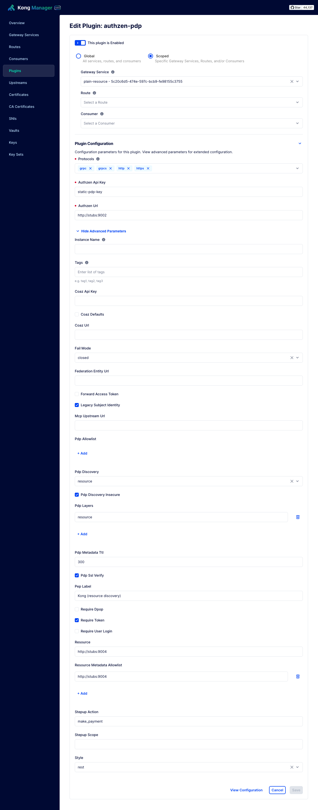
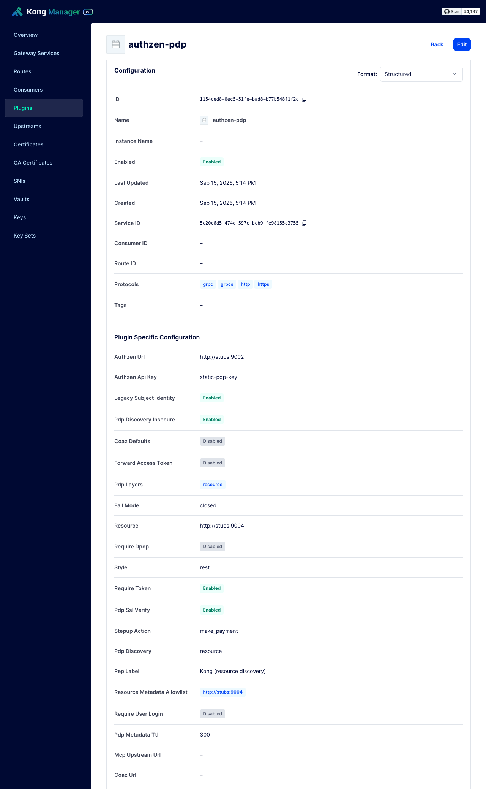

The Kong plugin
authzen-pdp is a Kong plugin that authorises every request against an AuthZEN PDP. With coaz_url set, coaz-pep decides the whole request — it verifies the access token, X-User-Token and the DPoP proof, maps the request, finds the PDPs and asks them — and the plugin enforces the answer; every MCP route works this way, after the plugin has parsed its JSON-RPC strictly. Without it, a REST route is decided in Lua, on claims an auth plugin in front has verified: request mapping, RFC 9470 step-up challenges, and RFC 9728 and AuthZEN metadata discovery. Every knob is plugin configuration on a route or service, and Kong Manager shows it. Version 0.4.1; Kong Gateway 3.4 or later, 3.9 or later recommended.
Install
DB-less: mount the plugin directory and tell Kong about it. The module path Kong looks for is kong.plugins.authzen-pdp.handler. Or install the rock the v0.4.1 release carries: luarocks install kong-plugin-authzen-pdp-0.4.1-1.all.rock. Kong's Enterprise images (kong/kong-gateway) ship without unzip, which luarocks needs to open a rock: apt-get install -y unzip first, as root.
# kong.conf, or environment
KONG_PLUGINS=bundled,authzen-pdp
KONG_LUA_PACKAGE_PATH=/opt/?.lua;;# compose: the demo's Kong, complete
kong:
image: kong:3.9
environment:
KONG_DATABASE: "off"
KONG_DECLARATIVE_CONFIG: /kong/kong.yml
KONG_PLUGINS: bundled,authzen-pdp
KONG_LUA_PACKAGE_PATH: /opt/?.lua;;
KONG_PROXY_LISTEN: 0.0.0.0:8000
KONG_ADMIN_LISTEN: "off"
KONG_LOG_LEVEL: notice
KONG_PROXY_ERROR_LOG: /dev/stderr
volumes:
- ./kong/kong.yml:/kong/kong.yml:ro
- ../gateways/kong/authzen-pdp:/opt/kong/plugins/authzen-pdp:ro
ports:
- "8000:8000"Before Kong 3.9, kong.request.get_raw_body cannot read back a body Kong buffered to disk, so a request body larger than client_body_buffer_size (8 KiB by default) is refused with a 413 rather than authorised unread; raise nginx_http_client_body_buffer_size on those releases. A PDP with a private or self-signed certificate is trusted through KONG_LUA_SSL_TRUSTED_CERTIFICATE=system,/path/to/ca.pem, not by turning verification off.
How a route is decided
With coaz_url | Without it | |
|---|---|---|
| Who decides | coaz-pep, the whole request, over POST /v1/mcp/check | this plugin |
| The access token | verified by coaz-pep | read here, trusted because the route sets access_token_verified_upstream (an openid-connect or jwt plugin validated it first) or allow_insecure |
X-User-Token, DPoP | verified by coaz-pep | never read; require_user_login and require_dpop need coaz_url |
| Routes | REST and MCP | REST only |
| PDP discovery | coaz-pep's, federation included | this plugin's: off, authzen or resource |
On an MCP route every request goes to coaz-pep — every JSON-RPC method, the SSE GET, the session DELETE — once its body has been read whole and parsed as exactly one JSON-RPC object. What the plugin refuses before asking is in the wire table.
The plugin in Kong Manager
Kong Manager draws the plugin's form from schema.lua, so every field below appears here with its default pre-filled, and the required ones marked. Captured from the demo's Kong with Kong Manager OSS turned on (KONG_ADMIN_GUI_LISTEN), against the 0.3.0 schema: 0.4.0 adds access_token_verified_upstream, allow_insecure and max_request_body_size to the same form, 0.4.2 the three timeouts and decision_deadline_ms, and a configuration the schema refuses is refused there with the messages below.

authzen_url and authzen_api_key. Kong Manager title-cases the names; the tables below use the names as written in configuration.
Every field
Grouped as they are used, not as the schema lists them. Types are the schema's; ref marks a field that accepts a Kong vault reference such as {vault://env/authzen-url} instead of a literal, and enc one Kong encrypts at rest where it has a keyring.
The PDP
| Field | Type · default | Meaning |
|---|---|---|
authzen_url required · ref | string | The static PDP's base URL. With discovery off the AuthZEN default paths are appended; with it, the PDP for a resource that publishes nothing, and the one PDP that receives the key. Its origin is always permitted, even over http. Plays no part when coaz_url is set. |
authzen_api_key required · ref · enc | string | Sent as Authorization: Bearer to authzen_url only. A discovered PDP never receives it. |
pdp_ssl_verify | boolean · true | TLS verification on PDP and coaz-pep calls. A PEP that accepts any certificate has no integrity on the decision it enforces. Off needs allow_insecure; trust a private certificate with lua_ssl_trusted_certificate instead. |
The route
| Field | Type · default | Meaning |
|---|---|---|
pep_label | string · kong-pep | Names this PEP in denials and the X-PDP-PEP response header, e.g. PEP#2 (Bank API edge). |
style | rest | mcp · rest | rest maps method and path to an evaluation; mcp treats the route as an MCP edge, every request of which coaz-pep decides. mcp needs coaz_url. |
require_token | boolean · true | Reject a request that carries no readable access token. |
access_token_verified_upstream | boolean · false | Without coaz_url, the plugin reads the access token's claims without verifying its signature. Set true when an openid-connect or jwt plugin on the route validates Authorization first — both run before this one. Give that plugin no anonymous consumer, or a request it could not authenticate reaches this one unverified. Without this, coaz_url or allow_insecure, the configuration is refused. |
require_dpop | boolean · false | Enforce the RFC 9449 sender constraint. coaz-pep checks the proof, so this needs coaz_url. |
require_user_login | boolean · false | Require a logged-in end user (X-User-Token), verified by coaz-pep; absent, a 401 login_required challenge. Needs coaz_url. |
stepup_scope | string | The scope a step-up challenge names when the policy's advice names none. |
stepup_action | string · make_payment | The action the step-up applies to; sent to coaz-pep. |
forward_access_token | boolean · false | Forward the raw token to the PDP as context.access_token, so the PDP can verify the signature, read cnf, score the client. Only when the PDP connection is TLS and authenticated. |
resource | string | The protected resource's identifier (RFC 8707), the key discovery starts from. A rest route without one uses the static PDP. Sent to coaz-pep when set. |
max_request_body_size | integer · 1048576 | The largest request body, in bytes, the plugin reads to authorise a request. A body Kong buffered to disk is read back up to this (Kong 3.9+); a larger one is a 413, never authorised unread. |
coaz_timeout_ms | integer · 15000 | Timeout on the call to coaz-pep's check API, or decision_deadline_ms when that is shorter. |
pdp_timeout_ms | integer · 10000 | Timeout on each PDP layer's evaluation, or what is left of the deadline when that is less. A PDP that times out is unavailable, and the layer's rule decides. |
discovery_timeout_ms | integer · 5000 | Timeout on each metadata document fetched, and on the federation face relayed from coaz-pep. Never cut short by the deadline: what a fetch finds is cached for every request. |
decision_deadline_ms | integer · 20000 | What one decision may take, counted from when the request has been read: discovery and every layer. A layer with nothing left is unavailable, and its rule decides. A client that sends slowly spends its own time, not the decision's. |
Delegation to coaz-pep
| Field | Type · default | Meaning |
|---|---|---|
coaz_url | string | coaz-pep's HTTP check API, e.g. https://coaz-pep.internal:9192. Set, coaz-pep decides the whole request on the route and the plugin enforces its answer. Required for style: mcp, require_dpop and require_user_login. |
coaz_api_key ref · enc | string | The engine's CHECK_API_TOKEN, sent as a bearer. Required with coaz_url. |
mcp_upstream_url | string | The MCP server whose tools/list declares the mappings; the engine reaches it directly for discovery, so it must be on the engine's MCP_UPSTREAM_ALLOWLIST. |
coaz_defaults | boolean · true | Govern every MCP method by the COAZ-MCP binding's default mappings: tools that declare no mapping, and every method that is not a tools/call (ping, notifications and responses pass; anything unknown is denied). Only false keeps the old pass-through for methods other than tools/call, which is not conformant. |
federation_entity_url | string | Makes the route the resource's federation face: /.well-known/openid-federation and /.well-known/oauth-protected-resource (with any identifier path) are relayed from coaz-pep at this URL, which holds the key. Everything else on the route is untouched. |
PDP discovery
On a route decided in Lua. With coaz_url set, coaz-pep discovers under its own settings and these fields play no part.
| Field | Type · default | Meaning |
|---|---|---|
pdp_discovery | off | authzen | resource · off | off: the static PDP, default paths, no fetch. authzen: read authzen_url's /.well-known/authzen-configuration. resource: read the route's resource's RFC 9728 document for authzen_policy_decision_points, then that PDP's metadata, falling back to authzen_url when the resource publishes nothing. No federation mode: a trust chain cannot be validated without a JOSE verifier; a route that must take the federation's word belongs behind coaz-pep. |
pdp_metadata_ttl | number · 300 | Cache TTL, seconds, for resource and PDP metadata. A fetch that fails, or a document that does not validate, serves the last good document for up to one more TTL; after that, or with none, the layer is unavailable and its rule decides, and the failure is retried after 30 seconds. A 404 means no metadata: the static PDP, or the default paths. |
pdp_allowlist | array of string | Prefixes a discovered PDP, and every endpoint its metadata advertises, must match; authzen_url is always permitted. Required with discovery on. An entry may carry a path (a tenant's PDP); the PDP's own well-known document is still fetched on its origin. |
resource_metadata_allowlist | array of string | Prefixes a route's resource must match before its metadata is fetched. Empty means any. An entry may carry a path. |
pdp_discovery_insecure | boolean · false | Allow http for discovered URLs. Dev only, and needs allow_insecure; authzen_url's own origin is always trusted over http. |
Layers and fail mode
| Field | Type · default | Meaning |
|---|---|---|
pdp_layers | array of string · ["resource"] | The ordered PDPs to ask, every one of which must permit: static (the configured authzen_url, regardless of discovery), resource (what discovery finds for this route's resource), or a PDP identifier. Each entry may carry its own failure mode: "https://estate.example fail-open". The first that does not permit is the answer. An entry the plugin cannot read fails the route closed. Sent to coaz-pep with coaz_url. |
fail_mode | closed | open · closed | What a layer does when its PDP is unavailable — no answer, a 5xx, a 429 — unless the layer says for itself. closed denies with a 503. open skips the layer; if every layer was skipped the request is permitted, and any permit that skipped one carries X-PDP-Fail-Open. A refusal — a 3xx or 4xx, an answer with no boolean decision, a request that could not be encoded, an allowlist miss — never opens, and a deny is a decision, not a failure. Always sent to coaz-pep with coaz_url. |
Safety and compatibility
| Field | Type · default | Meaning |
|---|---|---|
allow_insecure | boolean · false | The one way past the refusals below that are about missing security: unverified claims, no coaz_api_key, no pdp_allowlist, plain-http discovery, TLS verification off. For development and demos. Kong logs what it relaxes, per route, when the configuration loads. |
protocols | http, https, grpc, grpcs | Kong's own field: which protocols the plugin runs on. |
legacy_subject_identity | boolean · true | Also send the non-standard subject.identity beside AuthZEN's subject.id, so upgrading the gateway alone cannot break a policy still reading the old field. Set false once policies read subject.id. |
user_token_subject | principal | pdp · principal | Whose X-User-Token counts, applied by coaz-pep. principal counts only the access token's own subject's login. pdp also counts someone else's verified login — a staff member approving for a customer — and the PDP, which receives user_sub, decides whether they may. Needs coaz_url. |
What the schema refuses
A configuration the plugin must not run with fails at load time, in Kong Manager, the Admin API and a DB-less file alike. allow_insecure relaxes the last five; the first three are things the plugin cannot do at all.
| Refused | Message |
|---|---|
style: mcp without coaz_url | style=mcp needs coaz_url: every request on an MCP route is decided by coaz-pep |
require_dpop without coaz_url | require_dpop needs coaz_url: this plugin cannot verify a DPoP proof signature itself, so verification is delegated to coaz-pep |
require_user_login without coaz_url | require_user_login needs coaz_url: this plugin cannot verify X-User-Token's signature, so the route is decided by coaz-pep |
no coaz_url and no access_token_verified_upstream | without coaz_url this plugin reads the access token's claims unverified: set access_token_verified_upstream when an openid-connect or jwt plugin validates Authorization first, or set coaz_url so coaz-pep verifies it |
coaz_url without coaz_api_key | coaz_url needs coaz_api_key: coaz-pep's check API authenticates its callers with CHECK_API_TOKEN |
discovery on without pdp_allowlist | pdp_discovery needs pdp_allowlist: without one, any https PDP a resource names would be asked |
pdp_discovery_insecure: true | pdp_discovery_insecure needs allow_insecure: it lets a discovered URL be plain http |
pdp_ssl_verify: false | pdp_ssl_verify=false needs allow_insecure: a PEP that accepts any certificate has no integrity on its decisions |
Complete configurations
A REST API decided in Lua, behind Kong's jwt plugin, with discovery and layers
_format_version: "3.0"
services:
- name: bank-api
url: http://bank-api:8070
routes:
- name: bank
paths: ["/bank"]
strip_path: true
plugins:
- name: jwt # priority 1450: runs first
config:
claims_to_verify: ["exp"]
- name: authzen-pdp
config:
authzen_url: "{vault://env/authzen-url}" # the static PDP, always permitted
authzen_api_key: "{vault://env/authzen-api-key}"
pep_label: "PEP#2 (Bank API edge)"
style: rest
require_token: true
access_token_verified_upstream: true # the jwt plugin validated Authorization
stepup_scope: "banking:payments:transfer"
pdp_discovery: resource
resource: https://api.bank.example
pdp_allowlist: ["https://pdp.bank.example", "https://estate-pdp.bank.example"]
resource_metadata_allowlist: ["https://api.bank.example"]
pdp_metadata_ttl: 300
forward_access_token: true
pdp_layers: ["https://estate-pdp.bank.example fail-open", "resource"]
fail_mode: closed
federation_entity_url: http://coaz-pep:9192 # the two well-known documents, relayed
legacy_subject_identity: falseA REST API coaz-pep decides, with DPoP and a logged-in user
- name: authzen-pdp
config:
authzen_url: "{vault://env/authzen-url}"
authzen_api_key: "{vault://env/authzen-api-key}"
pep_label: "PEP#2 (Bank API edge)"
style: rest
require_token: true
require_dpop: true # coaz-pep checks the proof
require_user_login: true # coaz-pep verifies X-User-Token
stepup_scope: "banking:payments:transfer"
coaz_url: https://coaz-pep.internal:9192
coaz_api_key: "{vault://env/coaz-api-key}"
resource: https://api.bank.example # coaz-pep keys discovery off it
pdp_layers: ["https://estate-pdp.bank.example fail-open", "resource"]An MCP edge
- name: bank-mcp
url: http://bank-mcp:8090
routes:
- name: mcp-edge
paths: ["/mcp"]
strip_path: false
plugins:
- name: authzen-pdp
config:
authzen_url: "{vault://env/authzen-url}"
authzen_api_key: "{vault://env/authzen-api-key}"
pep_label: "PEP#1 (MCP edge)"
style: mcp
require_token: true
require_user_login: true
coaz_url: https://coaz-pep.internal:9192 # every request of the route is decided there
coaz_api_key: "{vault://env/coaz-api-key}"
mcp_upstream_url: http://bank-mcp:8090/mcp
max_request_body_size: 1048576The demo's Kong, as it runs
The whole of demo/kong/kong.yml: one route in front of the plain stub, discovering the PDP from that resource's RFC 9728 document. It decides natively on the demo's unsigned tokens and discovers over plain http, so it sets allow_insecure, and Kong logs as much at startup.
_format_version: "3.0"
services:
- name: plain-resource
url: http://stubs:9004
routes:
- name: bank
paths: ["/bank"]
strip_path: true
plugins:
- name: authzen-pdp
config:
authzen_url: http://stubs:9002
authzen_api_key: static-pdp-key
pep_label: "Kong (resource discovery)"
style: rest
require_token: true
pdp_discovery: resource
resource: http://stubs:9004
pdp_discovery_insecure: true
resource_metadata_allowlist: ["http://stubs:9004"]
pdp_allowlist: ["http://stubs:9002", "http://stubs:9008"]
forward_access_token: true
allow_insecure: truePlugin order
Priority 1000. Kong runs a higher number first, so its authentication plugins — jwt 1450, oauth2 1400, key-auth 1250, openid-connect 1050 — run before this one, which is what access_token_verified_upstream relies on. ip-restriction 990, request-size-limiting 951, acl 950, rate-limiting 910 and request-transformer 801 run after: a request they would refuse still costs a PDP call, and a burst reaches the PDP before any limit is counted. On Kong Enterprise, dynamic ordering puts a plugin in front — ordering: { before: { access: ["authzen-pdp"] } } on the rate-limiting plugin.
What it puts on the wire
| Where | What | Meaning |
|---|---|---|
| proxied request, on permit | X-Auth-Principal, X-Auth-Agent, X-Auth-Scope, X-Auth-Acr | The decided identity and the authentication context the AS asserted, so a resource server records the delegation chain rather than inferring a channel from a username. A client's own copies are removed before anything else; a claim the token lacks stays absent. With coaz_url, whatever coaz-pep returns, an empty value removing the header. |
| to coaz-pep | POST {coaz_url}/v1/mcp/check | The route's knobs, the method, the normalised path, the authorization, x-user-token, dpop, content-type and content-encoding headers (each at most once, or a 400), and the body, read whole. |
| response | X-PDP-PEP, X-PDP-Decision, X-PDP-Action, X-PDP-Reason | Which PEP decided, what, for which action, and why. Printable ASCII only: a line break in a policy's reason becomes a space. |
| response, on a fail-open permit | X-PDP-Fail-Open | The identifiers of the layers that were skipped. Why is in Kong's log. |
| response, on deny | status, WWW-Authenticate, JSON body | The same challenge vocabulary as every other PEP here: 401 login_required, insufficient_scope (RFC 9470), invalid_token; 403 for a plain deny; 503 when a PDP was unavailable under a closed rule, refused, or could not be resolved. Body {"error":"authorization_failed","pep":…,"reason":…}, or coaz-pep's rendering, relayed verbatim. WWW-Authenticate parameters are escaped as quoted-strings. |
| response, a request refused before asking | 413, 415, 431, 400 | On an MCP route, a JSON-RPC error: 413 -32600 for a body larger than max_request_body_size or one Kong cannot read back; 415 -32600 for a Content-Encoding other than identity; 400 -32700 for a BOM, invalid UTF-8, trailing data or anything not JSON; 400 -32600 for a batch, anything but one object, member names that differ only in case, a non-string method, a tools/call without a name, or a body on anything but a POST. On a REST route, 413 for an unreadable payment or account body and 400 for one that is not a JSON object or carries no finite amount. 431 for more than 1,000 headers. |
| to the PDP | context.resource_metadata, context.resource_metadata_source, context.request, context.access_token | The resource's document verbatim and where it came from, the endpoint hit, and the raw token when the route allows. The plugin enforces none of it. |
What is delegated, and why
- Token verification. A Kong plugin has no JOSE verifier, and reading a JWT's claims without checking its signature proves nothing about who sent it. With
coaz_url, coaz-pep verifies the access token andX-User-Token; without it, an auth plugin in front must, and the route says so. - DPoP. Comparing the proof's JWK thumbprint to
cnf.jktwithout checking the proof's signature proves nothing, because the proof carries the very JWK being compared. The proof travels in the check request; the separate/v1/dpop/verifycall is gone. - MCP. Mappings are CEL-shaped and discovered from
tools/list; one implementation of the profile for every gateway, so two renderings of one decision cannot drift. The plugin parses the JSON-RPC strictly first and relays the engine's answer verbatim. - Federation. Same reason as DPoP: no signature verification, no trust chain. With
coaz_url, coaz-pep's discovery, federation included, decides where the PDP is. - The federation face. The plugin cannot sign, so it relays the two well-known documents from coaz-pep, which holds the key.
The plugin is tested with busted against a mocked Kong that models the PDK behaviours these bugs hid in (gateways/kong/spec/), holds a coverage floor, and was run through Kong 3.7, 3.9 and 3.15 DB-less against a stub that plays the PDP and coaz-pep.
Upgrading from 0.3
- An MCP route needs
coaz_url, and every request on it now goes to coaz-pep. Upgrade coaz-pep with the plugin. coaz_defaultsdefaults to true;falsekeeps the old pass-through.- With
coaz_urlset, coaz-pep decides the whole request, REST routes included, and the route's own discovery settings no longer apply there. - Without
coaz_url, setaccess_token_verified_upstream(with anopenid-connectorjwtplugin in front) orallow_insecure.X-User-Tokenis no longer read there, socontext.user_scopeis no longer sent. coaz_urlneedscoaz_api_key; discovery needspdp_allowlist; the weakening flags needallow_insecure.- A 3xx or 4xx from a PDP is a refusal, closed even on a fail-open layer; a metadata outage serves the last good document for up to one more TTL, then fails the layer under its rule.
- REST patterns are anchored to the routed path, and an unreadable payment or account body is refused.
X-PDP-Fail-Opennames identifiers only.- The rock is
kong-plugin-authzen-pdp-0.4.1-1, from thev0.4.1tag.